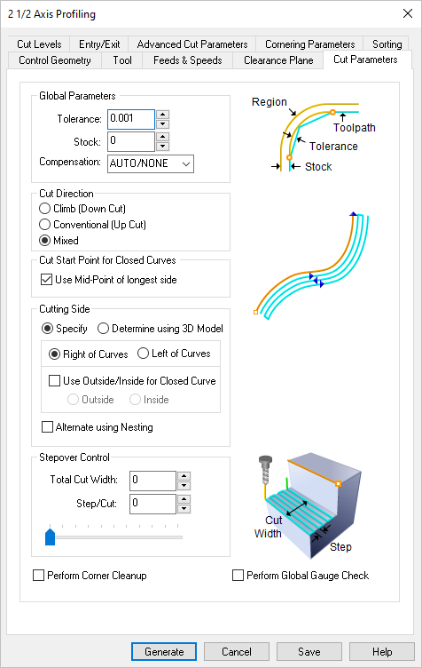
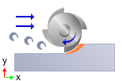
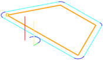
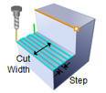

This Cut Parameters tab is similar for the Mill operations listed below. It allows you to define the cut parameters for the current Profiling operation. You can set Global Parameters, Cut Direction and the Stepover Distance via this tab of the operation dialog. The Global Parameters section allows you to set the tolerance value to be used in machining. A uniform thickness or stock that needs to be left around the part can also be specified here. Refer to each option below.
Profiling, 2½ Axis Profiling, 4 Axis |
 Dialog Box: Cut Parameters tab, Profiling Operations |
The Global Parameters section allows you to set the tolerance value to be used in machining. A uniform thickness or stock that needs to be left around the part can be specified here. Tolerance This is the allowable deviation from the actual part geometry plus the Stock allowance (if any). In 2 Axis methods, this Tolerance is applied to XY motions only.  Tolerance
Stock This is the thickness of the layer that will remain on top of the part after the toolpath is complete. Roughing operations generally leave a thin layer of stock. For finishing operations this value is zero.  Stock Compensation This enables cutter compensation. The compensation direction, left or right, is determined by the Cut Direction selected (Climb or Conventional). |

Climb (Down Cut) Select Climb (Down Cut) and the tool will be maintained in a downward motion into the stock.  Climb (Down Cut) Conventional (Up Cut) Select Conventional (Up Cut) and the direction of the tool will be maintained in an upward motion out of the stock. ") Conventional (Up Cut) Mixed Select Mixed and the direction of cutting is alternated between each parallel plane. This is a mixture of both Climb and Conventional cutting of the stock.  Mixed
For Z Level Cuts When Mixed is selected, zigzag motions are applied between step downs to eliminate tool retracts between z levels. If Climb or Conventional is selected, retract between z levels are applied. Refer to the images below:
|
 One of the basic concepts to understand in any milling operation is
One of the basic concepts to understand in any milling operation is 
Check this box to move the cut start point to the mid-point of the longest side of a closed curve.  Use Midpoint of Longest Curve |
Specify Use this option to specify that cutting side. Choose Right of Curves or Left of Curves (see below) This determines the side of the curve to be cut. Right / Left
Use Outside or Inside for Closed Curves Determine using the 3D model Note: This feature is not available in Xpress configuration.
Alternate Using Nesting If your control geometry has nested curves, check this box to alternate the cut side (i.e., Outside/Inside or Inside/Outside). You can use the Sort Parameters tab to sort clustered profiles.
|

This is how wide your cut should be. The Step/Cut determines your stepover. For example if Total Cut Width is set to 1.0 and Step/Cut is set to 0.25, there will be 4 passes created.  Total Cut Width This will determine the stepover for each cutting pass beginning at your total cut width and ending at your control geometry. Total Cut Width
|
Checking the Corner Cleanup box will cause automatic detection of all the corners that the tool could not reach between each pass. It will then add a toolpath based on the uncut area detected; either a linear cut in case of smaller areas or a cut that travels along the shape of the uncut area, when the area is large. |
With this parameter checked, the cutter will not violate any of the selected control geometry. This option only works with closed curves as shown in the illustration below.
|